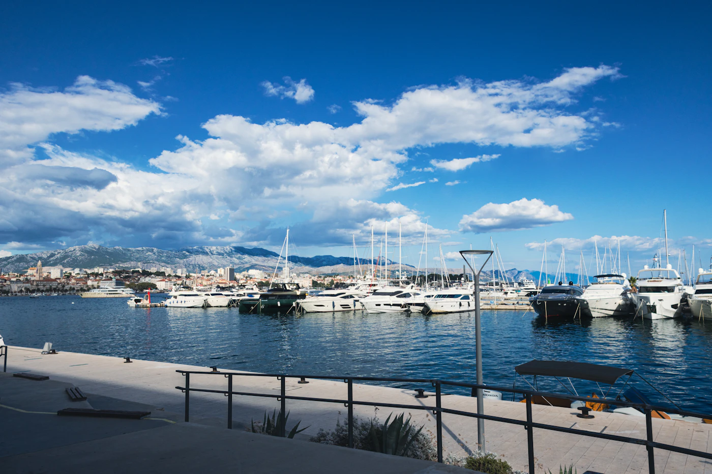
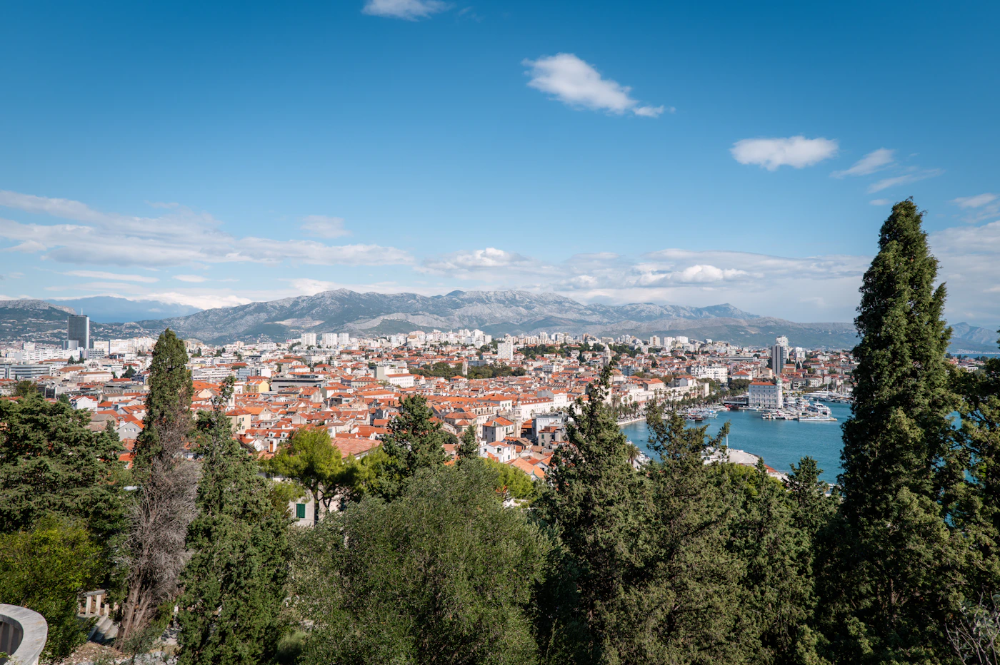

Reiseführer / Split
Split — beste Reisezeit, Flughafen, Inseln, Sehenswürdigkeiten

Wann nach Split reisen — die beste Zeit für die Stadt und Inselausflüge
Die Badesaison dauert von Juni bis Mitte September, mit dem Höhepunkt an Menschenmassen und Preisen im Juli und August. Mai, Juni und September/Oktober sind ruhiger und günstiger — das Meer ist bereits angenehm zum Baden, die Warteschlangen an den Fähren zu den Inseln sind kürzer, und ein Spaziergang durch den Diokletianpalast ist ohne Hitze angenehmer. Split ist auch außerhalb der Saison eine gute Basis, da die Stadt selbst auch dann interessant zu erkunden ist.
Flughafen Split und der Weg ins Stadtzentrum
Der Flughafen Split (SPT) liegt etwa 25 km vom Zentrum entfernt, in der Nähe von Trogir. Ins Stadtzentrum kommt man mit dem Pleso-Prevoz-Bus (auf die Flüge abgestimmt, etwa 30-40 Minuten), mit dem regulären Stadtbus (günstiger, langsamer) oder mit Taxi/Uber (fester Preis in die Stadt, praktisch nachts oder mit viel Gepäck). Wer aus Serbien anreist, nutzt oft den Direktbus (Belgrad–Split) für kleinere Gruppen — die Fahrt dauert etwa 8-9 Stunden.
Was eine Reise nach Split kostet — Richtpreise
- Keller des Diokletianpalastes — etwa 10-13 € pro Person; der Spaziergang durch den Palast selbst (Peristyl, Gassen) ist kostenlos, da es sich um einen lebendigen Teil der Stadt handelt.
- Katamaran zu den Inseln (Hvar, Brač, Vis) — ab 13-25 € pro Person einfache Fahrt, abhängig von Linie und Saison; im Sommer wird eine Vorausbuchung empfohlen, da Tickets ausverkauft sein können.
- Essen in einer Taverne — 15-20 € pro Person für ein Fischgericht; Lokale abseits der Riva sind für ähnliche Qualität meist günstiger.
- Kaffee — 2-3 €, üblich für die Region.
Sehenswürdigkeiten in Split in 2-3 Tagen
- Diokletianpalast — der Kern der Stadt, die Keller und der Peristyl sind Pflicht, am besten früh morgens vor den Touristengruppen.
- Kathedrale des Hl. Domnius — steig auf den Glockenturm für einen Blick auf die roten Dächer und das Meer.
- Riva — die Hauptpromenade am Meer, ein guter Ort für Kaffee und Menschenbeobachtung.
- Marjan — bewaldete Halbinsel direkt am Zentrum, Wanderwege und Aussichtspunkte mit Blick über die ganze Stadt.
- Inselausflug — Hvar (Nachtleben und Buchten), Brač (Strand Zlatni Rat) oder Vis (ruhiger, weiter entfernt) als Tagesausflug mit dem Katamaran.

Wo man in Split essen sollte — lokale dalmatinische Küche
Für ein authentisches Erlebnis geh ein paar Straßen von der Riva weg, wo die Preise für ähnliche Qualität niedriger sind. Unbedingt probieren: schwarzes Risotto mit Sepia, Pašticada (in Wein geschmortes Rindfleisch, meist zum Mittagessen), Fritule als Dessert und frisch gebackenen Burek oder Gebäck aus der Bäckerei als schnelles Frühstück vor dem Inselausflug. Der Fischmarkt (Pazar) am Morgen ist ein guter Ort, um zu sehen, was an dem Tag frisch ist.
Geheimtipps in Split abseits der Hauptrouten
- Strand Kašjuni — unterhalb von Marjan, ruhiger und bei Touristen weniger bekannt als der beliebte Strand Bačvice.
- Vidilica — Café auf Marjan mit einem der besten Ausblicke auf die Stadt beim Sonnenuntergang.
- Festung Klis — wenige Minuten von der Stadt entfernt, auch als Drehort von „Game of Thrones" bekannt, mit Panoramablick auf Split und Umgebung.
- Veli Varoš — altes Fischerviertel mit engen Steingassen, eine ruhigere Alternative zum Palastzentrum.
Praktische Tipps vor der Buchung
- Dokumente — Kroatien gehört zur EU und zum Schengen-Raum; prüfe die Einreisebestimmungen für deine Staatsangehörigkeit vor der Reise.
- Fähren und Katamarane — im Sommer sind Tickets für beliebte Linien (Split-Hvar) oft schon Tage im Voraus ausverkauft, buche, sobald du die Termine kennst.
- Parken — im Zentrum selbst teuer und begrenzt; mit Auto lohnt es sich, etwas weiter von den Palastmauern zu parken.
Plane deine Reise nach Split mit SKLOPI →